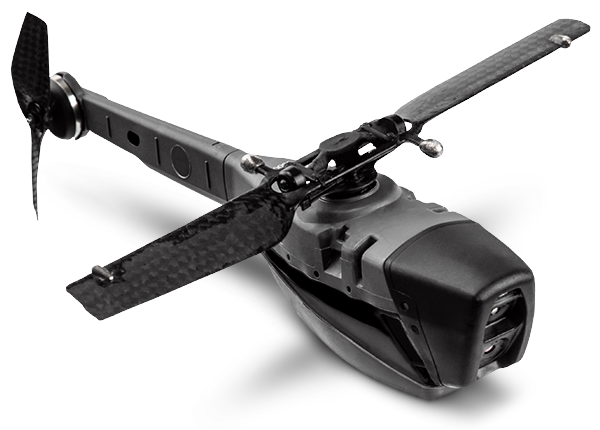
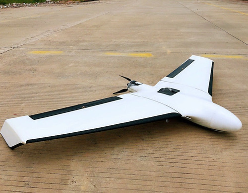

Classificações
É muito importante saber a distinção entre os diversos tipos de drone disponíveis no mercado. Os drones são divididos em algumas categorias, que são basilares conhecer para uma sábia decisão. São três as categorias que podemos destacar, os drones multi-motores, rotor únicos e com asa fixa.
Rotor Único
Os drones de rotor únicos tem como principal característica a presença de apenas uma hélice, assim, conseguindo manter o drone estabilizado. Este modelo também é presente em alguns helicópteros reduzidos, que são comuns no caso de voos pairados.
Drone de rotor único.
Multi-motores
Esta categoria de drones, que são os multi-motores, estão entre os mais comuns, bastante utilizados para o mapeamento e criação de modelos com a utilização do DroneDeploy. Já neste modelo ele possui diversos retores. E as lâminas de passo fixo são utilizadas para controlar o movimento.

Drone multimotor.
Asa Fixa
E por fim, também podemos destacar o drone de asa fixa. Já no caso deste modelo, ele é igual as aeronaves comuns, obtendo assim o corpo central e duas asas nas laterais. O legal deste é que tem uma capacidade de voo muito maior que os drones que se encontram em outras categorias. Assim, traz a possibilidade da sua utilização por muito mais tempo.
Drone de asa fixa.